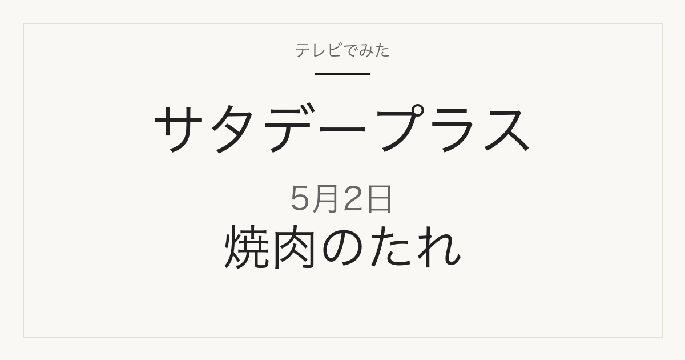

1位／番組掲載価格 538円
味研
食品添加物無添加焼肉のたれ

メーカー商品で、スーパーや通販で扱われます。楽天の販売ページは400g×1本です。番組データに容量の記載はなく、味研の容量ラインナップも当サイトでは未確認のため、番組掲載品と同一容量かは断定していません。楽天には別容量やセットの出品もあります。
テレビ紹介商品の記録メディア
2026年5月2日（土）放送
「ひたすら試してランキング」で調査された5品

2026年5月2日放送のサタデープラス「ひたすら試してランキング」焼肉のたれの1位は、味研「食品添加物無添加焼肉のたれ」（番組掲載価格538円）です。全5品の番組掲載価格は378円から538円です。このうち5品は楽天市場で販売ページを確認できました（販売単位が番組掲載と異なる場合があります）。
この記事には広告・アフィリエイトリンクが含まれます。順位・商品名・番組掲載価格は番組公式情報で確認しています。価格は2026年5月2日時点の番組調べで、現在の販売価格・在庫・送料は販売先で確認してください。容量・入数は商品名から読み取れる範囲で記載し、確認できないものは「未確認」としています。
番組の順位は番組独自の調査によるもので、当サイトの評価ではありません。コストパフォーマンスが項目に含まれるため、上位が最安とは限りません。
| 順位 | 商品名 | メーカー | 番組掲載価格 | 容量・入数 | 購入先 |
|---|---|---|---|---|---|
| 1位 | 食品添加物無添加焼肉のたれ | 味研 | 538円 | 未確認 | 楽天市場（販売ページを確認） |
| 2位 | ジャン 焼肉の生だれ | モランボン | 518円 | 未確認 | 楽天市場（販売ページを確認） |
| 3位 | 麻布十番三幸園 焼肉のたれ あっさり醤油味 245g | 盛田 | 378円 | 245g | 楽天市場（販売ページを確認） |
| 4位 | 黄金の味 中辛 | エバラ食品 | 524円 | 未確認 | 楽天市場（販売ページを確認） |
| 5位 | 生にんにく薫る焼肉醤油だれ | フンドーキン醤油 | 481円 | 未確認 | 楽天市場（販売ページを確認） |
1位／番組掲載価格 538円
味研
メーカー商品で、スーパーや通販で扱われます。楽天の販売ページは400g×1本です。番組データに容量の記載はなく、味研の容量ラインナップも当サイトでは未確認のため、番組掲載品と同一容量かは断定していません。楽天には別容量やセットの出品もあります。
2位／番組掲載価格 518円
モランボン

メーカー商品で、スーパーや通販で扱われます。番組掲載と同じ単品です（240g×1本・冷蔵品）。
3位／番組掲載価格 378円
盛田

商品名から読み取れる容量・入数は245gです。メーカー商品で、スーパーや通販で扱われます。番組掲載と同じ単品です（245g×1本）。ページ上の商品名は「焼肉のたれ」のみで「あっさり醤油味」の表記はありませんが、内容量欄は1本(245g)で番組掲載の245gと一致します。
4位／番組掲載価格 524円
エバラ食品

メーカー商品で、スーパーや通販で扱われます。楽天の販売ページは590gの出品です。番組データに容量の記載はなく、エバラ公式には複数容量があるため、番組掲載品の容量は未確認です。
5位／番組掲載価格 481円
フンドーキン醤油

メーカー商品で、スーパーや通販で扱われます。番組掲載と同じ単品です（300g×1本）。
MBS「サタプラ」ひたすら試してランキング 焼肉のたれ（2026年5月2日放送）
順位・商品名・番組掲載価格は2026年5月2日時点の番組公式ページによります。MBS公式サイトは直近の放送回のみ公開しているため、この回の公式ページは現在閲覧できません。上のリンクはインターネットアーカイブに保存された公式ページのコピーです。価格は放送時点の番組調べで、現在の販売価格・在庫・送料は販売先で確認してください。
公開：2026年9月9日／最終更新：2026年9月9日